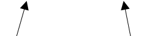

## Tour d'horizon ## des fonctionnalités ## de SHACL <div style="padding: 0;margin: 125px 0 0 0;font-size: 0.8em;display: flex;"> <span style=" width: 50%; text-align: left; ">Matthieu Viry</span><span style=" width: 50%; text-align: right; ">17 janvier 2020</span> </div>
## Au programme * [SHACL c'est quoi ?](#/1-cest-quoi) * [Validation de données RDF](#/2-validation) * [_Advanced Features_](#/3-af) * [Limitations](#/4-limitations) * [Adoption / Implémentations existantes](#/5-impl) * [Tentative de mise en oeuvre pour GASPAR](#/6-mise-en-oeuvre) * [Références](#/7-références-biblio) et [liens utiles](#/7-liens-utiles) <div style="font-size: 0.7em"> <br><br> Présentation : https://mthh.github.io/shacl_intro_20200117/ Shapes, data & code : https://github.com/mthh/shacl_example/ </div>
### 1) `SHACL` c'est quoi ? - __*SHA*__**pes _C_onstraint _L_anguage** - Spécification du W3C pour **valider des graphes RDF** avec un ensemble de conditions / contraintes <div class="fragment" style="font-size:0.75em;"> _"Shackle"_: https://en.wiktionary.org/wiki/shackle <div style="width: 150px;font-size: 0.3em;text-align: center;margin:auto;"> <p style="margin: auto;"><em>Source : <a href="http://www.mantusanchors.com/product/shackles/">http://www.mantusanchors.com/product/shackles/</a></em></p> </div> </div> --- #### `SHACL` c'est quoi ? - Inspiré par SPIN, IBM's Resource Shapes et un peu par ShEx - Un **vocabulaire RDF** `<http://www.w3.org/ns/shacl#>` - Un **mécanisme d'extension** notamment basé sur SPARQL --- #### `SHACL` - Éléments essentiels - Les conditions / contraintes sont représentées par leur _graphe de formes_ (__*shapes graph*__) - Le graphe de formes contient l'ensemble des formes à utiliser - Les graphes RDF à valider sont appelés les _graphes de données_ (__*data graphs*__) - Hypothèse de monde fermé --- #### `SHACL` - Éléments essentiels - _**Focus node**_: Un terme RDF qui est validé selon une forme (*shape*) en utilisant les triplets du graphe de données - Deux types de **formes** : * __Node shapes__: shapes about the focus node * __Property shapes__: shapes about the values of a property or path for the focus node --- ### Key classes in the SHACL vocabulary <div class="diagram-container" style="margin-left: 100px;"> <div class="diagram-class" style="margin-left: 200px"> <div class="diagram-class-name"><a href="https://www.w3.org/TR/shacl/#shapes">sh:Shape</a></div> <div class="diagram-class-properties"> <div class="diagram-class-properties-start"> <div><a href="https://www.w3.org/TR/shacl/#targetClass">sh:targetClass</a> : rdfs:Class</div> <div><a href="https://www.w3.org/TR/shacl/#targetNode">sh:targetNode</a> : any IRI or literal</div> <div><a href="https://www.w3.org/TR/shacl/#targetObjectsOf">sh:targetObjectsOf</a> : rdf:Property</div> <div><a href="https://www.w3.org/TR/shacl/#targetSubjectsOf">sh:targetSubjectsOf</a> : rdf:Property</div> </div> <div class="diagram-class-properties-section"> <div><a href="https://www.w3.org/TR/shacl/#deactivated">sh:deactivated</a> : xsd:boolean</div> <div><a href="https://www.w3.org/TR/shacl/#message">sh:message</a> : xsd:string or rdf:langString</div> <div><a href="https://www.w3.org/TR/shacl/#severity">sh:severity</a> : sh:Severity</div> </div> </div> </div> <div style="height: 60px; margin-left: 260px">  <span style="font-size: 0.9em; position: absolute;left: 315px;top: 313px;">rdfs:subclassOf</span> <span style="font-size: 0.9em; position: absolute;left: 584px;top: 313px;">rdfs:subclassOf</span> </div> <div style="white-space: nowrap; min-width: 1000px"> <div class="diagram-class" style="float: left; margin-right: 60px;"> <div class="diagram-class-name"><a href="https://www.w3.org/TR/shacl/#node-shapes">sh:NodeShape</a></div> <div class="diagram-class-properties"> <div class="diagram-class-properties-start"> <div><b><a href="https://www.w3.org/TR/shacl/#constraints">Constraint parameters</a></b>, for example:</div> <div><a href="https://www.w3.org/TR/shacl/#ClosedConstraintComponent">sh:closed</a> : xsd:boolean</div> <div><a href="https://www.w3.org/TR/shacl/#OrConstraintComponent">sh:or</a> : rdf:List</div> <div><a href="https://www.w3.org/TR/shacl/#NotConstraintComponent">sh:not</a> : sh:Shape</div> <div><a href="https://www.w3.org/TR/shacl/#PropertyConstraintComponent">sh:property</a> : sh:PropertyShape</div> </div> </div> </div> <div class="diagram-class" style="float: left;"> <div class="diagram-class-name"><a href="https://www.w3.org/TR/shacl/#property-shapes">sh:PropertyShape</a></div> <div class="diagram-class-properties"> <div class="diagram-class-properties-start"> <div><b><a href="https://www.w3.org/TR/shacl/#constraints">Constraint parameters</a></b>, for example:</div> <div><a href="https://www.w3.org/TR/shacl/#MinCountConstraintComponent">sh:minCount</a>, <a href="https://www.w3.org/TR/shacl/#MaxCountConstraintComponent">sh:maxCount</a> : xsd:integer</div> <div><a href="https://www.w3.org/TR/shacl/#ClassConstraintComponent">sh:class</a> or <a href="https://www.w3.org/TR/shacl/#DatatypeConstraintComponent">sh:datatype</a> : rdfs:Resource</div> <div><a href="https://www.w3.org/TR/shacl/#NodeConstraintComponent">sh:node</a> : sh:NodeShape</div> </div> <div class="diagram-class-properties-section"> <div><a href="https://www.w3.org/TR/shacl/#name">sh:name</a> : xsd:string or rdf:langString</div> <div><a href="https://www.w3.org/TR/shacl/#description">sh:description</a> : xsd:string or rdf:langString</div> <div><a href="https://www.w3.org/TR/shacl/#defaultValue">sh:defaultValue</a> : any</div> <div><a href="https://www.w3.org/TR/shacl/#group">sh:group</a> : sh:PropertyGroup</div> </div> <div class="diagram-class-properties-section"> <div><a href="https://www.w3.org/TR/shacl/#property-shapes">sh:path</a> : rdfs:Resource</div> </div> </div> </div> <div style="clear: both"></div> </div> </div> <div style="font-size: 0.45em;text-align:center;margin-top: 60px;"> <span><em>Repris depuis <a href="https://www.w3.org/TR/shacl/#constraints-section">https://www.w3.org/TR/shacl/#constraints-section</a></em></span> </div>
### 2) Validation - Elle s'opère sur le *graphe de données*, en utilisant un *graphe de formes* - Un **rapport de validation** est produit : rapport la conformance et l'ensemble des résultats de validation de chacune des formes - Rapport peut être personnalisé lors de la définitation du graphe de formes (`severity`, `resultMessage`) --- **Donc... comment définir ces _formes_ ?** <div class="syntax" style="font-size: 0.7em; text-align:left;"> Une forme `s` remplit une de ces conditions : - `s` est instance de `sh:NodeShape` ou `sh:PropertyShape`. - `s` est sujet d'un triple qui a `sh:targetClass`, `sh:targetNode`, `sh:targetObjectsOf` ou `sh:targetSubjectsOf` comme prédicat. - `s` est sujet d'un triple qui a un paramètre (`sh:minCount`, ..) comme prédicat - `s` est une valeur d'un paramètre d'attente de forme et de prise de liste tel que `sh:node`, ou un membre d'une liste SHACL qui est une valeur d'un paramètre d'attente de forme et de prise de liste tel que `sh:or`. </div>
#### Déclaration de la cible | Value | Description | |--------------------|--------------------| | `targetNode` | Pointer directement sur un noeud | | `targetClass` | Tous les noeuds qui ont un type donné | | `targetSubjectsOf` | Pointer sur le sujet d'un prédicat | | `targetObjectsOf` | Pointer sur l'objet d'un prédicat |
#### Composants de contrainte de *SHACL Core* | Type | Contraintes | |-------------------------------|--------------------| | Type de valeurs | `class`, `datatype`, `nodeKind` | | Cardinalité | `minCount`, `maxCount` | | Plage de valeurs | `minInclusive`, `maxInclusive`, `minExclusive`, `maxExclusive` | | Champ texte | `minLenght`, `maxLength`, `pattern`, `languageIn`, `uniqueLang` | | Paires de propriétés | `equals`, `disjoint`, `lessThan`, `lessThanOrEquals` | | Logiques | `not`, `and`, `or`, `xone` | | *Shape-based* | `qualifiedValueShape`, `qualifiedMinCount`, `qualifiedMaxCount`, `node`, `property` | | Autres | `closed`, `ignoredProperties`, `hasValue`, `in` | | | - | | Non-validantes | `name`, `description`, `order`, `group` |
#### *Type of value* | Contrainte | Description | |----------------|--------------------| | `class` | Doit être une instance du type donné | | `datatype` | Doit être du `datatype` donné (ex: `xsd:integer`) | | `nodeKind` | Doit être du type de noeud RDF donné (IRI, *blank node*, *literal*) | <br> #### Exemple ``` ex:BookShape1 a sh:NodeShape ; sh:targetClass ex:Book ; sh:property [ sh:path ex:datePublished ; sh:datatype xsd:date ; ] . ``` --- **Valide :** ``` ex:AliceInWonderland a ex:Book ; ex:datePublished "1865-11-26"^^xsd:date . ``` <br><br> **Invalide :** ``` ex:AliceInWonderland a ex:Book ; ex:datePublished "LongTimeAgo" . ```
#### *Cardinality constraints* | Contrainte | Description | |------------------|--------------------| | `minCount` | Restriction sur le nombre *minimum* de triplets concernant le *focus node* et un prédicat donné. Défaut : 0 | | `maxCount` | Restriction sur le nombre *maximum* de triplets concernant le *focus node* et un prédicat donné. Défaut : Sans limite| <br> #### Exemple ``` ex:BookShape2 a sh:NodeShape ; sh:targetClass ex:Book ; sh:property [ sh:path ex:author ; sh:nodeKind sh:IRIOrLiteral . sh:minCount 1 ; ] . ``` --- **Valide :** ``` ex:AliceInWonderland a ex:Book ; ex:author "Lewis Carroll" . ``` <br><br> **Invalide :** ``` ex:AliceInWonderland a ex:Book ; ex:datePublished "1865-11-26"^^xsd:date . ```
#### *String-based* | Contrainte | Description | |------------------|--------------------| | `minLenght` | Longueur *minimale* de la chaine de caractères | | `maxLength` | Longueur *maximale* de la chaine de caractères | | `pattern` | Une expression régulière à laquelle la valeur du noeud doit correspondre | | `languageIn` | Limite les tags de langage autorisés pour un noeud | | `uniqueLang` | Aucune paire de noeuds ne peut utiliser le même tag de langage | <br> #### Exemple ``` ex:BookShape3 a sh:NodeShape ; sh:targetClass ex:Book ; sh:property [ sh:path ex:title ; sh:minCount 1 ; sh:uniqueLang true ; ] ; sh:property [ sh:path ex:isbn ; sh:pattern "^(?:\\d[\\ |-]?){13}$" ; sh:maxCount 1 ; ] . ``` --- **Valide :** ``` ex:AliceInWonderland a ex:Book ; ex:isbn "9781409311232" ; ex:title "Alice in Wonderland"@en . ``` <br><br> **Invalides :** ``` ex:AliceInWonderland a ex:Book ; ex:isbn "9781409311232" ; ex:isbn "9780721409672" . ``` ``` ex:AliceInWonderland a ex:Book ; ex:title "Alice in Wonderland"@en ; ex:title "OtherTitleSameLang"@en . ```
#### *Logical* | Contrainte | Description | |------------------|--------------------| | `not` | Chaque noeud ne doit pas correspondre à un *shape* donné | | `and` | Chaque noeud doit correspondre à tous les *shapes* donnés | | `or` | Chaque noeud doit correspondre à au moins un des *shapes* donnés | | `xone` | Chaque noeud doit correspondre à exactement un des *shapes* donnés | <br> #### Exemple ``` ex:PersonAddressShape a sh:NodeShape ; sh:targetClass ex:Person ; sh:property [ sh:path ex:address ; sh:or ( [ sh:datatype xsd:string ; ] [ sh:class ex:Address ; ] ) ; sh:minCount 1 ] . ``` --- **Valide** ``` ex:Alice a ex:Person ; ex:address "12 rue des Lilas" . ``` ``` ex:AddressAlice a ex:Address. ex:Alice a ex:Person ; ex:address ex:AddressAlice . ``` <br><br> **Invalide** ``` ex:Alice a ex:Person ; ex:address 12 . ```
#### Exemple complet **Shapes graph** ``` @prefix rdf: <http://www.w3.org/1999/02/22-rdf-syntax-ns#> . @prefix rdfs: <http://www.w3.org/2000/01/rdf-schema#> . @prefix xsd: <http://www.w3.org/2001/XMLSchema#> . @prefix sh: <http://www.w3.org/ns/shacl#> . @prefix ex: <http://example.com/ns#> . ex:BookShape a sh:NodeShape ; sh:targetClass ex:Book ; sh:property [ sh:path ex:title ; sh:minCount 1 ; sh:uniqueLang true ; ] ; sh:property [ sh:path ex:author ; sh:nodeKind sh:IRIOrLiteral ; sh:minCount 1 ; ] ; sh:property [ sh:path ex:datePublished ; sh:datatype xsd:date ; ] ; sh:property [ sh:path ex:isbn ; sh:pattern "^(?:\\d[\\ |-]?){13}$" ; sh:maxCount 1 ; ] . ``` --- **Data graph** ``` @prefix rdf: <http://www.w3.org/1999/02/22-rdf-syntax-ns#> . @prefix rdfs: <http://www.w3.org/2000/01/rdf-schema#> . @prefix xsd: <http://www.w3.org/2001/XMLSchema#> . @prefix ex: <http://example.com/ns#> . ex:AliceInWonderland a ex:Book ; ex:title "Alice in Wonderland" ; ex:isbn "9780721409672" ; ex:author "Carol Lewis". ex:MyBook a ex:Book; ex:title "Mon super livre" ; ex:title "Ma vie, mon oeuvre" ; ex:datePublished "Not published yet !" . ``` --- **Validation report** ``` @prefix ex: <http://example.com/ns#> . @prefix rdf: <http://www.w3.org/1999/02/22-rdf-syntax-ns#> . @prefix owl: <http://www.w3.org/2002/07/owl#> . @prefix xsd: <http://www.w3.org/2001/XMLSchema#> . @prefix rdfs: <http://www.w3.org/2000/01/rdf-schema#> . @prefix sh: <http://www.w3.org/ns/shacl#> . [ a sh:ValidationReport ; sh:conforms false ; sh:result [ a sh:ValidationResult ; sh:focusNode ex:MyBook ; sh:resultMessage "Property needs to have at least 1 values, but found 0" ; sh:resultPath ex:author ; sh:resultSeverity sh:Violation ; sh:sourceConstraintComponent sh:MinCountConstraintComponent ; sh:sourceShape [] ] ; sh:result [ a sh:ValidationResult ; sh:focusNode ex:MyBook ; sh:resultMessage "Value must be a valid literal of type date" ; sh:resultPath ex:datePublished ; sh:resultSeverity sh:Violation ; sh:sourceConstraintComponent sh:DatatypeConstraintComponent ; sh:sourceShape [] ; sh:value "Not published yet !" ] ] . ```
### 3) _Advanced Features_ - W3C Working Group Note : https://www.w3.org/TR/shacl-af/ - __*Custom targets*__ (extension du mécanisme de sélection du *focus node* en utilisant SPARQL) - __*SHACL Functions*__ (déclaration de fonctions qui produisent un terme RDF) - __*Node expressions*__ (dériver un ensemble de noeuds RDF pour un *focus node* donné - utiles pour les deux fonctionnalités suivantes) - __*Expression constraints*__ (spécification d'une expression devant être respectée) - __*SHACL rules*__ (un vocabulaire léger pour l'échange de règles utilisables pour dériver des triplets RDF depuis des triplets existants) --- #### Exemple 1 : Définition d'une règle utilisant une fonction SPARQL **Définition d'une fonction (`sh:SPARQLFunction`)** ``` ex:multiply a sh:SPARQLFunction ; rdfs:comment "Multiplies its two arguments $op1 and $op2." ; sh:parameter [ sh:path ex:op1 ; sh:datatype xsd:integer ; sh:description "The first operand" ; ] ; sh:parameter [ sh:path ex:op2 ; sh:datatype xsd:integer ; sh:description "The second operand" ; ] ; sh:returnType xsd:integer ; sh:select """ SELECT ($op1 * $op2 AS ?result) WHERE { } """ . ``` --- **Définition d'une forme à laquelle doivent se conformer les instances de `ex:Rectangle`** ``` ex:RectangleShape a sh:NodeShape ; sh:targetClass ex:Rectangle ; sh:property [ sh:path ex:width ; sh:datatype xsd:integer ; sh:minCount 1 ; sh:maxCount 1 ; ] ; sh:property [ sh:path ex:height ; sh:datatype xsd:integer ; sh:minCount 1 ; sh:maxCount 1 ; ] . ``` --- **Création d'une règle (`sh:rule`) à appliquer aux instance de `ex:Rectangle` qui sont valides au regard de la forme `ex:RectangleShape`** ``` ex:RectangleRulesShape a sh:NodeShape ; sh:targetClass ex:Rectangle ; sh:rule [ a sh:TripleRule ; sh:subject sh:this ; sh:predicate ex:area ; sh:object [ ex:multiply ( [ sh:path ex:width ] [ sh:path ex:height ] ) ; ] ; sh:condition ex:RectangleShape ; ] . ``` --- **Création d'une instance de `ex:Rectangle`** ``` ex:ExampleRectangle1 a ex:Rectangle ; ex:width 7 ; ex:height 8 . ``` **Nouveau triplet généré** ``` ex:ExampleRectangle1 ex:area 56 . ``` --- #### Exemple 2 : Définition d'une règle SPARQL (`sh:SPARQLRule`) ``` ex:ClassificationRectangleRule a sh:NodeShape ; sh:targetClass ex:Rectangle ; sh:rule [ a sh:SPARQLRule ; sh:construct """ prefix rdf: <http://www.w3.org/1999/02/22-rdf-syntax-ns#> prefix ex: <http://example.com/ns#> CONSTRUCT { ?rect ex:has_category ?cat ; ex:area ?area . } WHERE { { SELECT (AVG(?_area) AS ?avg_area) WHERE { ?_rect ex:height ?_a ; ex:width ?_b . BIND(?_a * ?_b AS ?_area) } } ?rect ex:height ?a ; ex:width ?b . BIND(?a * ?b AS ?area) . BIND(IF(?area > ?avg_area, "BIG RECTANGLE !", "SMALL RECTANGLE !") AS ?cat). } """ ; ] . ``` --- **Avec deux instances de `ex:Rectangle`** ``` ex:ExampleRectangle1 a ex:Rectangle ; ex:width 7 ; ex:height 8 . ex:ExampleRectangle2 a ex:Rectangle ; ex:width 9 ; ex:height 12 . ``` **Nouveaux triplets générés** ``` ex:ExampleRectangle1 ex:area 56 ; ex:has_category "SMALL RECTANGLE !" . ex:ExampleRectangle2 ex:area 108 ; ex:has_category "BIG RECTANGLE !" . ```
### 4) Limitations - **Récursion** absente de la recommandation du W3C<br>*(pas de sémantique standard)* - Pas de **syntaxe compacte** dans la recommandation du W3C - Pas d'information sur les noeuds validés<br>*(par rapport aux noeuds ignorés par exemple..)* - Certaines limitations sont adressées par **ShEx**<br><em>(syntaxe compacte concue en même temps que le langage, valeurs par défaut pour les cardinalités, pas de mécanisme d'inférence, etc.)</em>
### 5) Adoption - Implémentations - Bibliothèques - Implémentations de **SHACL-Core** dans de nombreux langages - Support de la part de la majorité des *triplestores* - Nombreuses **communications**, **papiers publiés** et **workshops** avec **SHACL** dans le titre ou les mots-clés ces 2 dernières années (*ESWC*, *ISWC*, etc.) - **SHACL Test Suite and Implementation Report**, W3C, 30 June 2019 : https://w3c.github.io/data-shapes/data-shapes-test-suite/ --- #### Bibliothèques <br> | **Bibliothèque** | Langage | Basé sur ... |Fonctionnalités | |------------------|--------------------|--------------|----------------| | `pySHACL` | Python | RDFLib | Core | | `SHACL` (TopQuadrant) | Java | Jena | Core + SHACL-SPARQL, Advanced features, SHACL-JS | | `Shacl.js` | Javascript | | Core | | `dotNetRDF` | C# | | Core | | `SHaclEX` | Scala | Jena & RDF4J | Core | | `RDFUnit` | Java | | Core | <br><span style="font-size: 0.7em;"><em>D'autres implémentations (souvent partielles) de SHACL sont trouvables sur le Web</em></span> --- #### *Triplestores* <br> | **Triplestore** | Fonctionnalités | |------------------|--------------------| | `Apache Jena Fuseki` | Core + SHACL-SPARQL | | `AllegroGraph` > 6.6.0 | Core | | `GraphDB` > 9.1 | Core | | `Eclipse RDF4J` > 2.3.0 | Core | | `Stardog` > 6.1.0 | Core + SHACL-SPARQL | <br> <div style="font-size: 0.65em;"> *Au 15 janvier 2020 :* <del> `Virtuoso` </del>, <del> `BlazeGraph` </del> </div> --- #### Éditeurs & *Online playgrounds* - SHACL playground ➔ https://shacl.org/playground/ - SHACL Online Editor ➔ https://www.ida.liu.se/~robke04/SHACLTutorial/ - RDFShape: RDF playground ➔ https://rdfshape.herokuapp.com/ <br>*(source: https://github.com/weso/rdfshape)* - `Shape Designer` ➔ https://gitlab.inria.fr/jdusart/shexjapp - Et aussi `Stardog Studio`, `TopBraid Composer`, `Protégé`
### 6) Tentative de mise en oeuvre avec `GASPAR` <p></p> <div style="width: 50%; text-align: center; margin: auto;" class="fragment slow"> <p style="color: red;font-weight: bold;position: absolute;top: 384px;left: 39%;">CONFIDENTIEL</p> </div>
### 7) Références biblio. - Boneva, I., Dusart, J., Fernándezálvarez, D., & Labra Gayo, J. E. (2019). **Shape Designer for ShEx and SHACL Constraints**. Présenté à ISWC 2019 - 18th International Semantic Web Conference, Auckland, Nouvelle-Zélande. Consulté à l’adresse https://hal.archives-ouvertes.fr/hal-02268667 - Corman, J., Reutter, J. L., & Savković, O. (2018). **Semantics and Validation of Recursive SHACL**. In D. Vrandečić, K. Bontcheva, M. C. Suárez-Figueroa, V. Presutti, I. Celino, M. Sabou, … E. Simperl (Éd.), The Semantic Web – ISWC 2018 (Vol. 11136, p. 318‑336). https://doi.org/10.1007/978-3-030-00671-6_19 - Labra Gayo, J. E., Prud’hommeaux, E., Boneva, I., & Kontokostas, D. (2018). **Validating RDF data**. Consulté à l’adresse http://book.validatingrdf.com/. - Labra Gayo, J. E., Fernández-Álvarez, D., & García-González, H. (2018). **RDFShape: An RDF Playground Based on Shapes**. Proceedings of the ISWC 2018 Posters & Demonstrations, Industry and Blue Sky Ideas Tracks co-located with 17th International Semantic Web Conference (ISWC 2018), Monterey, USA, October 8th - to - 12th, 2018. Consulté à l’adresse http://ceur-ws.org/Vol-2180/paper-35.pdf - Meester, B. D., Heyvaert, P., Arndt, D., Dimou, A., & Verborgh, R. (2018). **RDF Graph Validation Using Rule-Based Reasoning**. Semantic Web 1 (0) 1–5 1. IOS Press. - Pareti, P., Konstantinidis, G., Norman, T. J., & Şensoy, M. (2019). **SHACL Constraints with Inference Rules**. In C. Ghidini, O. Hartig, M. Maleshkova, V. Svátek, I. Cruz, A. Hogan, … F. Gandon (Éd.), The Semantic Web – ISWC 2019 (Vol. 11778, p. 539‑557). https://doi.org/10.1007/978-3-030-30793-6_31
### 7) Liens utiles - **SHACL Use Cases and Requirements**, W3C Working Group Note 30 June 2019 : https://w3c.github.io/data-shapes/data-shapes-ucr/ - **SHACL Advanced Features**, W3C Working Group Note 08 June 2017 : https://www.w3.org/TR/shacl-af/ - **From SPIN to SHACL** : https://spinrdf.org/spin-shacl.html - **SHACL and OWL Compared** : https://spinrdf.org/shacl-and-owl.html - **ShEx vs. SHACL** : https://www.slideshare.net/jelabra/shex-vs-shacl - **Astrea** : https://github.com/oeg-upm/Astrea <br><span style="font-size: 0.75em;"><em>"Astrea is a software that generates SHACL shapes for one or more OWL ontologies using a set of SPARQL queries that hold the equivalence between those two specifications"</em></span>
<h3 style="font-family: cursive;"><em>Merci !</em></h3> <img class="no-box" src="img/ttt_transp.png"> <h3 style="font-family: cursive;"><em>Questions ?</em></h3>